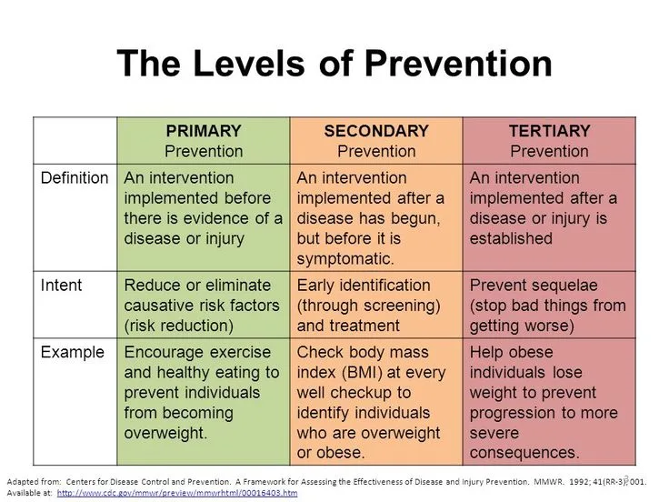
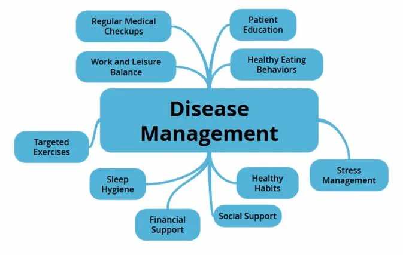

Expanded Nursing Uganda Explanation
Natural prevention should be understood beyond a short definition. Link the concept to patient history, focused assessment, common risks, nursing priorities, documentation and evaluation of outcomes.
01 Prevention and Control of Disasters
Prevention and control of disasters is a crucial aspect of ensuring the safety and well-being of communities and minimizing the impact of unforeseen events. This requires collaborative efforts from various stakeholders, including the government, scientific research institutions, and individuals.
Government’s Role : Governments play a fundamental role in disaster prevention and control. They are responsible for developing and implementing policies, regulations, and frameworks that address potential risks. This includes establishing disaster management agencies, creating early warning systems, and allocating resources for emergency response.
Scientific Research’s Role: Scientific research plays a significant role in understanding the nature of disasters, their causes, and their potential impacts. Researchers study various aspects, such as weather patterns, geological processes, and environmental factors, to identify potential hazards and develop early warning systems. Through scientific investigations, experts can provide accurate predictions, assess vulnerability, and develop strategies to prevent or mitigate disasters.
People’s Role : Individuals are essential stakeholders in disaster prevention and control. By being informed and educated about potential risks, people can take proactive measures to protect themselves and their communities. This includes participating in training programs on emergency preparedness, learning first aid techniques, and understanding evacuation procedures. Individuals can also contribute by promoting a culture of safety within their communities, raising awareness about potential risks, and actively engaging in disaster drills and exercises.
02 Natural Disaster Prevention
- Educate and create evacuation plans for earthquakes.
- Use construction materials that are not harmful even if structures collapse.
- Construct earthquake-resistant buildings with proper structural design.
- Establish earthquake regulatory agencies for quick relief efforts.
- Set up specific healthcare units to treat earthquake-related injuries.
- Map fault lines and weak areas in earthquake-prone regions.
- Ensure that buildings like schools, hospitals, and offices are located away from active faults.
- Raise public awareness about earthquake preparedness.
- Develop standards for earthquake-resistant buildings.
- Enforce adherence to building codes and regulations.
- Conduct geological studies and research on earth movements.
- Acquire technology for earthquake monitoring and detection.
- Repair faulty electrical wiring, gas cylinders, and utility connections.
- Place heavy objects on lower shelves and secure them.
- Store breakable items on low shelves or in cabinets that can be fastened shut.
- Ensure that the residence is firmly anchored to its foundation.
- Install flexible pipe fittings to prevent gas or water leaks.
- Identify safe spots in each room, such as under sturdy tables or against inside walls.
- Conduct earthquake drills with family members, practicing “Drop, Cover, and Hold On!”
If Indoors:
- Take cover under a study desk, table, or bench, or against an inside wall.
- Stay away from glass, windows, outside doors, and furniture that could fall.
- If in bed, protect your head with a pillow unless there is a heavy light fixture above.
- Stay indoors until the shaking stops and it is safe to go outside.
- Avoid using elevators.
- Be prepared for power outages and activated sprinkler systems or fire alarms.
If Outdoors:
- Move away from buildings, streetlights, and utility wires.
- If in a moving vehicle, stop safely and remain inside.
- Avoid stopping near buildings, trees, overpasses, and utility wires.
- Proceed cautiously once the earthquake has stopped, watching for road and bridge damage.
- If trapped under debris, tap on a pipe or wall to signal your location. Use a whistle if available.
- Be prepared for aftershocks, which can cause additional damage.
- Open cabinets cautiously and be aware of falling objects.
- Stay away from damaged areas unless requested by authorities.
- Coastal areas should be aware of possible tsunamis.
- Encourage earthquake drills to practice emergency procedures.
- Promote extensive first aid and survival kits for homes and automobiles.
- Educate about safe water and food precautions.
- Provide emergency medical care to those in need.
- Ensure continuity of care for those who have lost access to necessary medical supplies.
- Conduct surveillance for communicable diseases and injuries.
- Issue media advisories with appropriate warnings and advice for injury prevention.
- Establish environmental control measures.
- Facilitate the use of surveillance forms by search and rescue teams to record relevant information about buildings, collapse, hazards, and victims.
- Raise awareness in communities about flood risk reduction measures.
- Enforce regulations for managing river banks.
- Protect and restore wetlands.
- Ensure proper physical planning for rural and urban settlements.
- Implement land use planning in flood-prone areas.
- Key aspects of land use planning in flood-prone areas include: a . Identifying flood-prone areas that are first affected during floods. b . Avoiding construction and high population density in floodplains. c . Planting trees in the upper reaches of rivers (catchment areas) to prevent soil erosion and excessive runoff. d . Constructing physical barriers such as embankments, reservoirs, and diversion channels to control floodwater.
- Prevent human encroachment in floodplains and catchment areas to reduce deforestation and soil erosion, which contribute to excessive runoff.
- Utilize technology for flood relief efforts, including: a . Advanced communication techniques for flood forecasting and warnings. b . Efficient evacuation of people. c . Provision of temporary shelters, medicines, drinking water, food, and clothing. d . Implement measures to control epidemic diseases through spraying, vaccination, etc.
Before a Flood:
- Avoid building in floodplains unless you elevate and reinforce your home.
- Raise the furnace, water heater, and electric panel if susceptible to flooding.
- Install “check valves” in sewer traps to prevent floodwater from backing up into drains.
- Construct barriers (levees, beams, floodwalls) to prevent floodwater from entering buildings.
- Seal basement walls with waterproofing compounds to prevent seepage.
- Learn swimming skills, as they can be helpful.
During a Flood:
If a flood is likely in your area, take the following precautions:
- Stay informed by listening to the radio or television.
- Be aware that flash flooding can occur. If there’s a possibility of a flash flood, move immediately to higher ground.
- Pay attention to streams, drainage channels, canyons, and areas prone to sudden flooding.
- If evacuation is necessary, secure your home, turn off utilities, and move to higher ground. Avoid walking or driving through floodwaters.
After a Flood:
Follow these guidelines in the aftermath of a flood:
- Listen to news reports to determine if the water supply is safe to drink.
- Avoid floodwaters as they may be contaminated or electrically charged.
- Steer clear of moving water and be cautious of weakened roads.
- Report downed power lines and avoid contact with them.
- Return home only when authorities declare it safe.
- Stay away from flooded buildings.
- Exercise caution when entering buildings, as there may be hidden damage, especially in foundations.
- Service damaged septic tanks, cesspools, and sewage systems promptly to avoid health hazards.
- Clean and disinfect all items that came into contact with floodwater, as mud may contain sewage and chemicals.
- The Ministry of Agriculture, Animal Husbandry, and Fisheries, in collaboration with Local Governments, will implement specific programs aimed at improving food production, conservation, and distribution. This will involve utilizing available technical and scientific knowledge and promoting sustainable development and utilization of natural resources.
- The government of Uganda is committed to establishing and maintaining adequate grain reserves in famine-prone areas and during emergencies. At the initial stages, support from donors, humanitarian organizations, and development agencies is encouraged.
- The Department of Relief, Disaster Preparedness, and Management will play a crucial role in providing relief food and non-food items to individuals and communities facing food shortages until the next harvest season. Collaboration with humanitarian and development agencies will be sought to enhance relief efforts.
- Support will be given to food-for-asset programs that focus on land preparation, rehabilitating social infrastructure, and other activities essential for ensuring community stability.
- Uganda aims to increase food production and productivity by promoting the adoption of improved agricultural technologies and practices.
- Efforts will be made to streamline land tenure systems in Uganda, ensuring equitable access and sustainable use of land resources to enhance food security.
- Community awareness programs will be implemented to encourage the adoption of high-yielding and drought-resistant crop varieties and livestock breeds suitable for Uganda’s diverse agro-ecological zones.
- The promotion of modern farming methods, including the use of mechanization and appropriate agricultural machinery, will be prioritized among farmers and communities.
- Uganda will establish measures for household, community, regional, and national food reserves and silos to ensure sufficient food stocks for times of scarcity.
- The government is committed to implementing food security and nutrition policies, focusing on improving access to nutritious and safe food for all Ugandans.
- A National Database on famine will be established to gather and analyze relevant data, enabling evidence-based decision-making and proactive response to food security challenges.
To mitigate the risks associated with landslides, the following measures are necessary:
- Identification and Regulation : Officially designate areas prone to landslides and mudslides and prohibit any settlements in these high-risk zones.
- Resettlement : Relocate all individuals residing in landslide-prone areas to safer locations to ensure their safety and well-being.
- Afforestation Promotion : Undertake initiatives to encourage and promote afforestation, especially in vulnerable regions. Planting trees helps stabilize slopes, reducing the likelihood of landslides.
- Law Enforcement: Strictly enforce relevant laws and policies related to land use, construction, and development in landslide-prone areas to prevent unauthorized activities that may increase the risk of landslides.
- Sustainable Land Use Practices : Encourage the adoption of appropriate farming technologies and land use practices that minimize soil erosion and maintain slope stability, such as terracing and contour plowing.
- Slope Support : Implement measures to provide support to slopes and prevent instability: a . Construct retaining walls using materials like concrete, gabions (stone-filled wire blocks), wooden, and steel beams, among others. b . Implement effective drainage control systems to prevent water from infiltrating into the slope, which can weaken it.
- Monitoring of Mining Activities : Monitor mining operations in hilly and unstable regions closely. Implement strict regulations and guidelines to minimize any potential destabilizing effects caused by mining activities.
- Slope Revegetation : Undertake plantation initiatives to establish vegetation cover on unstable hilly slopes. Planting trees and other suitable vegetation helps stabilize the soil and prevents erosion.
- Prevention of Human Encroachment : Prohibit human activities such as construction, road development, agriculture, and grazing on unstable slopes. Preventing encroachment helps maintain the natural stability of the slopes.
Uganda frequently experiences heavy storms accompanied by hailstorms, thunderstorms, and violent winds. These weather events pose significant risks, including flooding, public health hazards, and widespread destruction. To address these challenges, the following measures are crucial:
- Promoting Agroforestation : Encourage the practice of agroforestry, which involves planting trees and shrubs alongside agricultural crops. Agroforestation helps in windbreak formation, reducing the impact of violent winds and hailstorms on crops.
- Public Awareness and Evacuation Planning : Raise public awareness about the importance of timely evacuation during heavy storms. Educate communities on recognizing early warning signs and establishing evacuation plans to ensure their safety.
- Building Code Adherence : Enforce strict adherence to proper building codes and standards that consider the risks posed by heavy storms. Construct buildings and infrastructure using materials and techniques that can withstand strong winds and hail damage.
- Improved Farming Techniques : Promote the adoption of proper farming techniques that minimize vulnerability to heavy storms. This includes implementing measures such as contour plowing, mulching, and terracing to prevent soil erosion and water runoff during heavy rainfall.
- Weather Stations and Early Warning Systems : Establish weather stations and early warning systems across vulnerable regions. These systems can provide timely alerts and forecasts to communities, allowing them to prepare and take necessary precautions in the face of approaching heavy storms.
- Improved Sanitation and Hygiene Practices: Emphasize the importance of proper sanitation and hygiene practices, such as handwashing, safe disposal of waste, and access to clean water. This helps prevent the spread of diseases and reduces the risk of epidemics.
- Vaccination and Treatment: Ensure widespread vaccination and immunization of the affected population against preventable diseases. Promptly treat those who are sick to minimize the severity and spread of epidemics.
- Distribution and Proper Usage of Mosquito Nets: Distribute mosquito nets to communities and promote their proper usage to combat mosquito-borne diseases, such as malaria. This reduces the incidence of infections and epidemics.
- Adequate Staffing of Health Centers: Ensure that all health centers are adequately staffed with qualified personnel who can effectively diagnose, treat, and manage epidemics. This includes training healthcare workers and providing necessary resources.
- Research on Modern Emerging Diseases: Promote research and surveillance activities focused on identifying and understanding modern emerging diseases. This knowledge enables timely response and effective strategies to control and prevent epidemics.
- Strengthened Entomological Services and Disease Surveillance: Enhance entomological services to monitor disease vectors and improve disease surveillance systems. This enables early detection, rapid response, and containment of epidemics.
- Public Awareness Campaigns: Create public awareness about epidemic prevention, symptoms, and available healthcare services. Educate communities on proper hygiene practices, disease prevention measures, and the importance of seeking medical help promptly.
- Vaccination and Spraying: Implement vaccination programs and spray treatments to prevent and control the spread of animal diseases. Use appropriate insecticides and pesticides to manage crop diseases.
- Strengthen Disease Surveillance Programs: Enhance disease surveillance systems to monitor and detect outbreaks of animal and crop diseases promptly. This facilitates early intervention and containment measures.
- Enforcement of Animal Movement Regulations (Quarantine): Enforce strict regulations on the movement of animals to prevent the spread of diseases. Implement quarantine measures when necessary.
- Adoption of New Technologies: Promote the adoption of new and appropriate technologies in agriculture to prevent and manage crop and animal epidemics. This includes modern farming techniques, disease-resistant varieties, and improved animal husbandry practices.
- Proper Case Management: Implement effective case management protocols for affected animals and plants. This includes providing appropriate veterinary care and implementing disease control measures.
- Introduction of Hybrid Seeds and Animals: Introduce hybrid seeds and animals that exhibit resistance or tolerance to prevalent diseases. This enhances resilience and reduces the susceptibility of crops and livestock to epidemics.
- Introduce Disease-Resistant Varieties: Promote the cultivation of disease-resistant plant varieties and the breeding of disease-resistant animal breeds. This helps prevent and minimize the impact of epidemics on agricultural production.
- Community Awareness and Early Warning Systems: Create awareness among communities about pest infestation risks and establish early warning systems. This enables timely detection and response to prevent widespread crop damage.
- Research on Pest-Resistant Crops: Support research efforts to develop pest-resistant crop varieties. This includes exploring natural pest control methods and promoting sustainable farming practices.
- Surveillance of Crop Diseases and Monitoring: Implement surveillance systems to monitor the incidence of crop diseases and assess crop production. This information helps in early intervention and targeted pest management strategies.
- Crop Spraying: Ensure the timely and appropriate spraying of crops with approved pesticides to control pests. Follow recommended application practices to minimize environmental impact and ensure crop safety.
- Vermin Management and Control: Develop and implement vermin management strategies to prevent infestation and minimize crop damage. This may involve trapping, baiting, or other targeted control methods.
- Promotion of Proper Post-Harvest Crop Husbandry: Educate farmers on proper post-harvest crop handling and storage practices to prevent pest infestation and reduce post-harvest losses.
03 Nursing Uganda Clinical Lens
Use Natural prevention as a practical nursing topic, not only a memorized definition. Translate theory into safe decisions, accountability, communication and service improvement.
- What to understand first: define natural prevention, identify the normal or expected pattern, then explain what changes when the patient is unwell.
- Why it matters in care: the nurse must recognize risk early, explain findings clearly, document accurately and know when to escalate.
- How to revise it: connect each point to assessment, nursing diagnosis or care problem, intervention, rationale and evaluation.
04 Assessment Guide
- The problem, stakeholders, available resources, policy requirements and ethical issues.
- Risks to patients, staff, confidentiality, quality, costs and continuity.
- Documentation, reporting lines, supervision and evaluation measures.
05 Nursing Priorities, Rationales and Outcomes
- Use evidence, policy and professional standards to guide action.
- Communicate clearly, document decisions and protect confidentiality.
- Evaluate whether the action improves safety, learning or service delivery.
The rationale for these priorities is patient safety: nursing actions should prevent deterioration, reduce discomfort, support recovery and create clear evidence for the next caregiver.
- Expected outcome: The plan is documented, realistic, ethical and improves patient care or learning outcomes.
06 Patient Teaching and Revision Check
- Explain natural prevention in simple language the patient or caregiver can repeat back.
- Teach warning signs, medicine or follow-up instructions, hygiene or lifestyle points where relevant.
- For exams, prepare a short answer using: definition, causes or risk factors, signs, assessment, management, complications and prevention.
- For ward practice, document baseline findings, actions taken, patient response and the plan for review.
Illustrations and Diagrams (3)



Related Video Lectures
Watch nursing lecture videos on YouTube for this topic. Opens in a new tab.
Watch on YouTubeExternal link: YouTube may use its own cookies and terms. Nursing Uganda is not affiliated with YouTube.